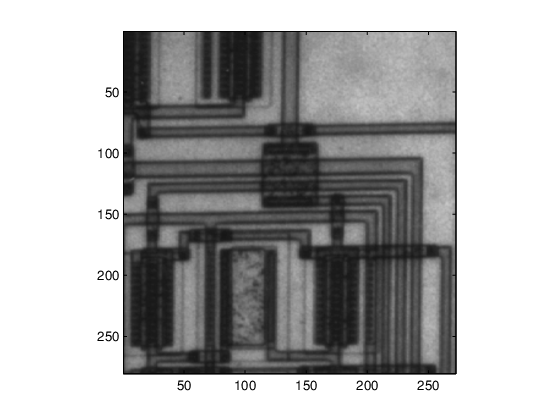
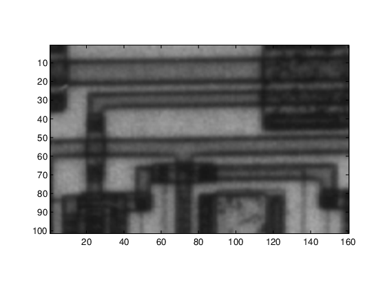
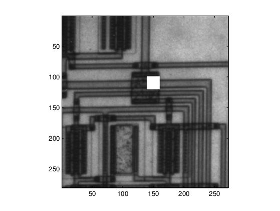
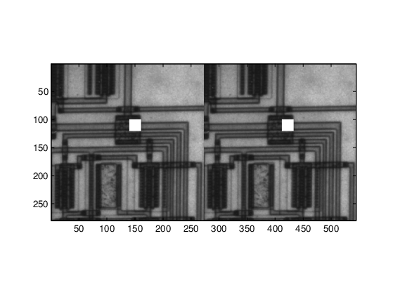
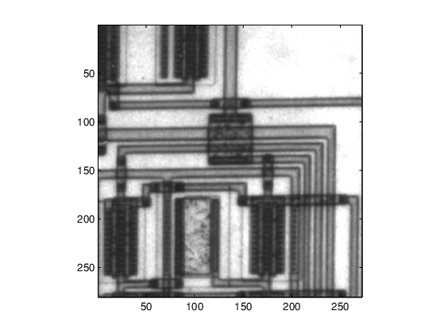

Subclasses of Built-In Types Without Properties
Specialized Numeric Types
Subclass built-in numeric types to create customized data types that inherit the functionality of the built-in type. Add functionality to that provided by the superclass by implementing class methods. Subclasses without properties store numeric data as the superclass type. If your subclass design does not require properties to store other data, the implementation is simpler because you do not need to define indexing and concatenation methods.
For more information, see Subclasses of MATLAB Built-In Types.
A Class to Manage uint8 Data
This example shows a class derived from the built-in uint8 class. This class simplifies the process of maintaining a collection of intensity image data defined by uint8 values. The basic operations of the class include:
Capability to convert various classes of image data to
uint8to reduce object data storage.A method to display the intensity images contained in the subclass objects.
Ability to use all the methods supported by
uint8data (for example,size, indexing,reshape,bitshift,cat,fft, arithmetic operators, and so on).
The class data are matrices of intensity image data stored in the superclass part of the subclass object. This approach requires no properties.
The DocUint8 class stores the image data, which converts the data, if necessary:
classdef DocUint8 < uint8 methods function obj = DocUint8(data) if nargin == 0 data = uint8(0); end obj = obj@uint8(data); % Store data on superclass end function h = showImage(obj) data = uint8(obj); figure; colormap(gray(256)) h = imagesc(data,[0 255]); axis image brighten(.2) end end end
Using the DocUint8 Class
Create DocUint8 Objects
The DocUint8 class provides a method to display all images stored as DocUint8 objects in a consistent way. For example:
cir = imread('circuit.tif');
img1 = DocUint8(cir);
img1.showImage;
Because DocUint8 subclasses uint8, you can use any uint8 methods. For example,
size(img1)
ans = 280 272
returns the size of the image data.
Indexing Operations
Inherited methods perform indexing operations, but return objects of the same class as the subclass.
Therefore, you can index into the image data and call a subclass method:
showImage(img1(100:200,1:160));
Subscripted reference operations (controlled by the inherited subsref method) return a DocUint8 object.

You can assign values to indexed elements:
img1(100:120,140:160) = 255; img1.showImage;
Subscripted assignment operations (controlled by the inherited subsasgn method) return a DocUint8 object.

Concatenation Operations
Concatenation operations work on DocUint8 objects because this class inherits the uint8
horzcat and vertcat methods, which return a DocUint8 object:
showImage([img1 img1]);

Data Operations
Methods that operate on data values, such as arithmetic operators, always return an object of the built-in type (not of the subclass type). For example, multiplying DocUint8 objects returns a uint8 object, so calling showImage throws an error:
a = img1.*1.8; showImage(a);
Check for missing argument or incorrect argument data type in call to function 'showImage'.
To perform operations of this type, implement a subclass method to override the inherited method. The times method implements array (element-by-element) multiplication.
Add this method to the DocUint8 class:
function o = times(obj,val) u8 = uint8(obj).*val; o = DocUint8(u8); end
When you override a uint8 method, MATLAB® calls the subclass method, not the base class method. The subclass method must:
Call the
uint8timesmethod on theDocUint8object data.Construct a new
DocUint8object using theuint8data.
After adding the times method to the DocUint8 class, the output of multiplication expressions is an object of the DocUint8 class:
showImage(img1.*1.8);
